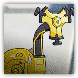

结构性原理 Structural Principle
近战 物理；领袖 构装（机械）

|
 |
结构性原理。Mechanist亲手制造的风险排查机械，也是他最好的朋友。在矢量突破中作为训练官助理和Mechanist协同登场，在场时，大幅提升Mechanist的生存能力。 |
结构性原理丨Structural Principle
中型构装（机械），无阵营
| AC 17 | 先攻 +3（13） |
| HP 210（20d8+120） | |
| 速度 60 尺 | |
| 调整 | 豁免 | 调整 | 豁免 | 调整 | 豁免 | |||||||||
|---|---|---|---|---|---|---|---|---|---|---|---|---|---|---|
| 力量 | 18 | +4 | +4 | 敏捷 | 16 | +3 | +8 | 体质 | 22 | +6 | +6 | |||
| 智力 | 14 | +2 | +7 | 感知 | 14 | +2 | +2 | 魅力 | 11 | +0 | +0 |
| 免疫 力场，闪电，毒素；目盲，耳聋，恐慌，魅惑，力竭，麻痹，石化，中毒，震慑 |
| 感官 黑暗视觉120尺，被动察觉14 |
| 语言 理解通用语但不能说 |
| CR 16（XP15,000；PB+5） |
特质 Traits
生命链接方程 Vital Nexus。只要Mechanist机械之心位于结构性原理的120尺内且生命值大于1，那么结构性原理的生命值无法被降至0。
应激防御模块 Stress Defense Module（1/轮）。触发：结构性原理受到伤害。响应：在结算本次伤害后，结构性原理的AC提升至22，并在所有豁免检定上具有优势，持续至其下回合开始。
动作 Actions
专注模块 Concentration Module。结构性原理发动两次侵蚀切割攻击，若目标AC低于其原来的AC则改为发动三次攻击。
侵蚀切割 Erosion Rend。近战攻击检定：+9，触及5尺。命中：30（4d4+20）点挥砍伤害。若攻击检定结果高于目标5或更高，目标的AC获得-5减值（不叠加），持续1分钟。
加速模块 Acceleration Module（仅限涅槃程序被激活后）。近战攻击检定：+9（若在攻击前直线移动了至少30尺则具有优势），触及5尺。命中：30（8d6+4）点钝击伤害，以及攻击前每移动了10尺就额外造成7（2d6）钝击伤害。